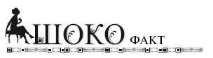

Виды массажа. Показания и ограничения к их применению .

Существует всего четыре вида массажа: спортивный, лечебный, гигиенический и косметический. Все прочие виды, так или иначе, связаны с этими четырьмя. Но даже в упомянутых выше четырех видовая граница существенно размыта. Так, лечебный массаж, конечно, включает в себя и спортивный и гигиенический, хотя оба эти вида немногим отличаются друг от друга. Некоторым особняком стоит косметический массаж, основная цель которого – улучшение внешнего вида человека. Но разделение есть, и особенно сильно оно проявляется в специализации профессионалов, проводящих массаж.
Лечебный массаж в нашей стране разрешено проводить только дипломированным специалистам, окончившим не только среднеспециальное медицинское учреждение, но и подтвердившим свою квалификацию. Лечебный массаж состоит из собственно лечебного, проводимого в процессе лечения больного, и реабилитационного, помогающего восстановиться тем или иных органам или функциям организма после выздоровления. Лечебный массаж применяется при заболеваниях опорно-двигательного аппарата, болезнях нервной системы, желудочнокишечного тракта и дыхательных путей, при гинекологических и урологических заболеваниях, а также в некоторых других случаях.

Итальянские ученые доказали, что люди, которые любят шоколад и много его едят, реже страдают слабоумием в старости.

Спортивный массаж, как и некоторые виды восточного и точечного, может проводить любой желающий, получивший образование на курсах, средняя продолжительность которых составляет 60 академических часов. Полученных знаний будет вполне достаточно для работы в спортивных центрах и тренажерных залах, а добиваться квалификационного сертификата в этом случае не требуется. Есть все же в этом деле определенные сложности, связанные с несовершенством российского законодательства.
И вновь косметический массаж немного выделяется из этого ряда. Для его проведения важно знание косметических препаратов, способов их применения и тех результатов, которые это применение дает. Нельзя сказать, что сам массаж здесь вторичен – конечно нет. Но одних только знаний массажиста здесь явно недостаточно.
В нашей национальной школе массажа применяются четыре основных приема:
– поглаживание;
– разминание;
– растирание;
– удары.
Посмотрим на каждый из этих приемов. Поглаживанием является механическое воздействие руками массажиста на область тела человека с давлением, не превышающим тяжесть рук, в центростремительном направлении. При разминании давление рук на область тела, выполняемых спиралевидно, изменяется от нормального до уровня болевого порога чувствительности. При растирании давление до уровня болевого порога осуществляется на протяжении одного пасса. А удары представляют собой механическое колебательное воздействие рук массажиста, выполняемое с определенным ритмом продольно или поперечно. Удары могут выполняться ладонями и ребрами рук. Безусловно, этими приемами не ограничивается воздействие на тело человека при проведении сеанса массажа. Каждый из приемов имеет ряд изменений, связанных с интенсивностью и способом воздействия на кожу.
Дегустируют шоколад, запивая только крепким, несладким чаем.


Массаж, речь идет о профилактическом массаже, рекомендуется всем здоровым людям для профилактики заболеваний, прежде всего костно-мышечного аппарата, а также для поддержания хорошего жизненного тонуса. Есть ряд болезней, при котором врач назначает лечебный массаж. К ним относятся:
• Головные боли различного происхождения.
• Боли в спине, пояснице, шее, обусловленные дегенеративно-дистрофическими процессами в позвоночнике (остеохондроз, радикулиты и т. д.).
• Последствия ушибов, растяжения мышц, сухожилий и связок.
• Переломы на всех стадиях заживления.
• Функциональные расстройства после перелома и вывиха.
• Миалгии, миозиты.
• Артриты, в том числе ревматоидный, в подострой и хронической стадии.
• Язвенная болезнь желудка и двенадцатиперстной кишки (вне обострения).
• Невралгии и невриты не в стадии обострения.
• Параличи, как спастические, так и вялые.
• Хроническая недостаточность сердечной мышцы.
• Стенокардия.
• Артериальная гипертензия. Гипертоническая болезнь.
• Артериальная гипотония.
• Реабилитационный период после инфаркта миокарда.
• Хронический гастрит.
• Нарушение моторной функции толстого кишечника.
• Бронхит и бронхиальная астма.
• Пневмония (в период выздоровления и хроническая форма).
Решение о проведении лечебного массажа принимает врач, самолечение здесь недопустимо. Есть заболевания, при которых массаж и вовсе противопоказан, поэтому надо знать, в каких случаях его применять нельзя:
• Острое лихорадочное состояние и высокая температура.
• Злокачественные болезни крови.
• Гнойный процесс любой локализации.
• Кровотечения и наклонность к тромбообразованию.
• В период гипер– и гипотонических кризов.
• Заболевания кожи, ногтей, волос (инфекция, грибок).
• Выраженное варикозное расширение вен.
• Воспаление кровеносных и лимфатических сосудов.
• Тромбоз.
• Атеросклероз периферических сосудов и сосудов головного мозга.
• Аневризма аорты и сердца.
• Острая ишемия миокарда.
• Почечная, печеночная, легочная, сердечная недостаточность в период обострения.
• Заболевания органов брюшной полости с наклонностью к кровотечениям.
• Злокачественные опухоли.
• Липомы.
• Аллергические заболевания с накожными высыпаниями.
• Отек Квинке и анафилаксии.
• Психические заболевания с чрезмерным психомоторным возбуждением.
• Наркотическое опьянение.
• Острая респираторная вирусная инфекция (ОРВИ) любого типа.
• Расстройство функций желудочно-кишечного тракта (тошнота, рвота, жидкий стул).
• Гангрена.
• Трофические язвы.
• Воспалительный процесс лимфатических узлов.
• Туберкулез.
• Сифилис.
• Остеомиелит.
• Осложнения после операции.
Этот перечень достаточно полный, хотя, возможно, не исчерпывает всех ограничений для проведения любого вида массажа. Заметим, что и косметический массаж противопоказан при указанных заболеваниях, хотя в каждом конкретном случае вы должны получить четкое указание врача по этому поводу.
Вы знаете, как правильно есть шоколадные конфеты? Речь, конечно, идет об официальных обедах. Возьмите конфету в руки, разглядите, что нарисовано на фантике. Разверните обертку и выложите конфету на блюдце. Обертку аккуратно сложите, комкать фантики – моветон! Теперь можете съесть конфету.

Получив общие представления о массаже, обратимся к его разновидности – косметическому, в нашем случае – шоколадному. Этот массаж разделяется на несколько групп, в числе которых можно назвать подготовительный массаж, восстановительный, антицеллюлитный и некоторые другие.